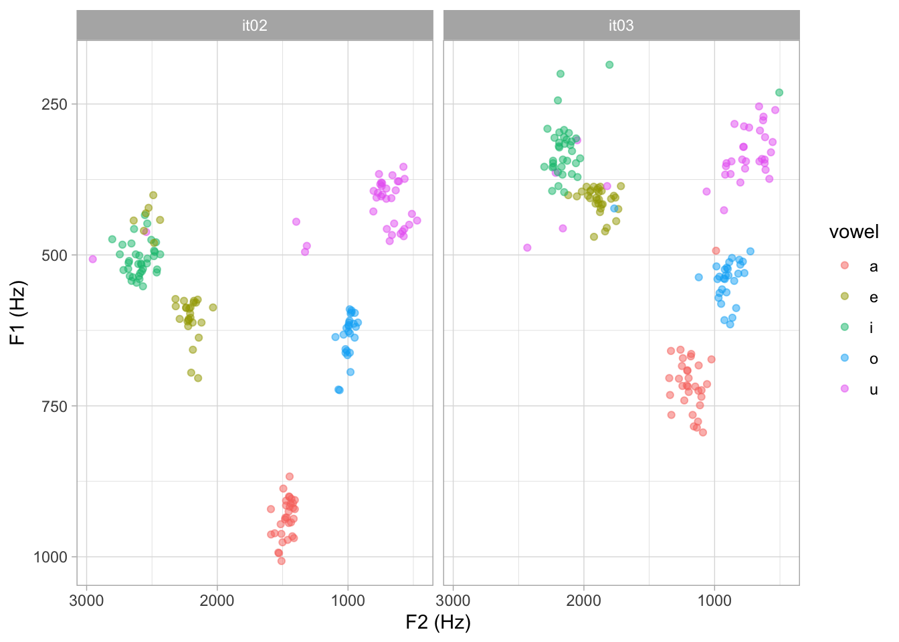
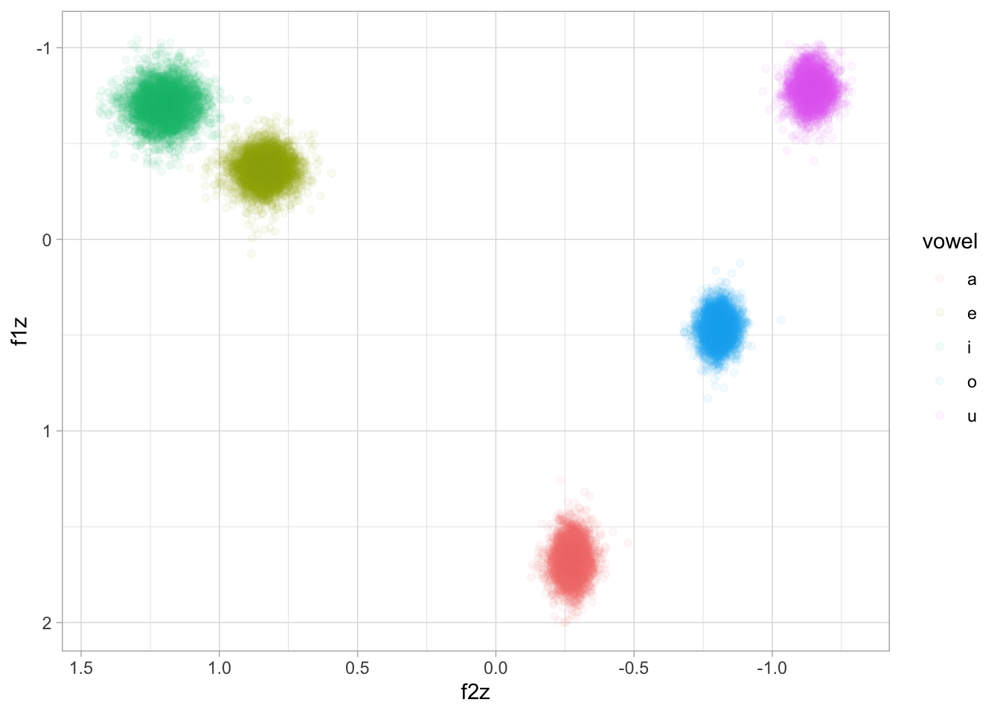
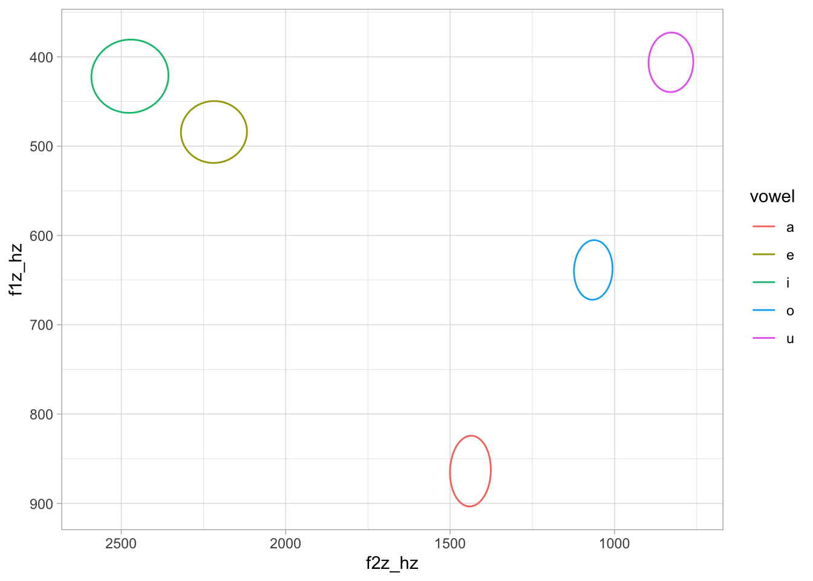

library(tidyverse)
theme_set(theme_light())
library(brms)
library(posterior)
library(tidybayes)
# remotes::install_github("stefanocoretta/coretta2018itaegg)
library(coretta2018itaegg)
library(kableExtra)Normalising formant values for plotting and modelling
Phonetics
R
In this R tutorial, you will learn how to normalise formant values for plotting and for modelling.
First, let’s attach the necessary packages. We will use data from Coretta (2025), contained in the coretta2018itaegg package. You will have to install the package from GitHub (code below).
Now we can load the ita_egg data, which has formant values from 19 speakers of Northwestern Italian (Verbano-Cusio-Ossola province). Formant values were extracted from 5 points within the first (stressed) vowel of CVCV words. In this post, we will use values from the 3rd (central) point. Below you can see a preview of the data.
data("ita_egg")
ita_egg <- ita_egg |>
drop_na(f13, f23)The columns of interests are:
f13: first formant value in Hz (taken from the mid-point of the vowel).f23: second formant value in Hz (taken from the mid-point of the vowel).vowel: one of /a, e, i, o, u/. The data comes from disyllabic CVCV words.speaker: the speaker’s ID.
1 Raw Hz
The following is a vowel space plot, with the raw formant values.
ita_egg |>
ggplot(aes(f23, f13, colour = vowel)) +
geom_point(alpha = 0.5) +
scale_x_reverse() + scale_y_reverse() +
labs(x = "F2 (Hz)", y = "F1 (Hz)")
We know that different baseline vocal tract lengths result in different placements of the speaker’s vowel space within the vowel plot. Simplifying, longer vocal tracts correspond to lower formants on average. Compare for example speaker IT02 and IT03. Based on their vowel spaces, we can derive that IT02 has a shorter vocal tract than IT03.
ita_egg |>
filter(speaker %in% c("it02", "it03")) |>
ggplot(aes(f23, f13, colour = vowel)) +
geom_point(alpha = 0.5) +
scale_x_reverse() + scale_y_reverse() +
labs(x = "F2 (Hz)", y = "F1 (Hz)") +
facet_wrap(vars(speaker))
2 Within-speaker normalisation
Because of the different baseline vocal tract length, plotting raw formant values can result in misleading higher variance of formant values for each vowel. One common way to “normalise” for different baseline vocal tract lengths is to calculate z-scores within speaker. This is known as the Lobanov normalisation procedure due to Lobanov (1971) having proposed the method.
The following code calculates z-scores for each formant, within speaker (remember to ungroup the tibble at the end). Z-scores are simply the value minus the mean divided by the standard deviation.
ita_egg <- ita_egg |>
group_by(speaker) |>
mutate(
f1_z_sp = (f13 - mean(f13)) / sd(f13),
f2_z_sp = (f23 - mean(f23)) / sd(f23)
) |>
ungroup()If we plot the within-speaker normalised data, now the clouds of values for each vowel look “tighter”.
ita_egg |>
ggplot(aes(f2_z_sp, f1_z_sp, colour = vowel)) +
geom_point(alpha = 0.5) +
scale_x_reverse() + scale_y_reverse() +
labs(x = "F2 (z-scores)", y = "F1 (z-scores)")
However, z-scores are very difficult to interpret in this context. Technically, a z-score is a standardised measure of distance from the mean. The unit of z-scores is the standard deviation of the variable. So a z-score of +1 means that the value is one standard deviation above the mean (+1 SD). A z-score of -2 indicates that the value is two standard deviations below the mean (-2 SD). Since we have normalised within speaker, the mean and SD refer to the specific mean and SD of each speaker.
3 Within-speaker normalised Hz
We can transform the z-scores back to Hz by using the overall mean and SD: this will results in “normalised” Hz, or in other words Hz values for an “average” speaker (averaged across all speakers). The following code does that.
ita_egg <- ita_egg |>
mutate(
f1_z_sp_hz = (f1_z_sp * sd(f13)) + mean(f13),
f2_z_sp_hz = (f2_z_sp * sd(f23)) + mean(f23)
)Now we can plot with the normalised Hz values.
ita_egg |>
ggplot(aes(f2_z_sp_hz, f1_z_sp_hz, colour = vowel)) +
geom_point(alpha = 0.5) +
scale_x_reverse() + scale_y_reverse() +
labs(x = "F2 (norm Hz)", y = "F1 (norm Hz)")
4 Across-speaker normalisation
It seems to have become common to z-scores within speaker and then model this normalised data with multilevel regression models with by-speaker varying terms. Since the data is normalised within speaker, the by-speaker varying intercept is basically useless: there is no individual variability in intercept to account for, because of the normalisation.
In reality, a multilevel model can efficiently deal with individual variation (and even pool that information for estimation), so there is no real need to use within-speaker normalise data. However, z-scoring across speakers can help with convergence. In the following code, we calculate z-scores across speakers (note that there is no group_by() in the code).
ita_egg <- ita_egg |>
mutate(
f1_z = (f13 - mean(f13)) / sd(f13),
f2_z = (f23 - mean(f23)) / sd(f23)
)We can now fit a multivariate multilevel regression model with F1 and F2 as outcome variables. To keep things simple we just add vowel as a predictor and we include speaker-specific varying terms for intercept and vowel. We use set_rescor() to estimate correlation between the residuals of F1 and F2.
for_bm <- brm(
bf(mvbind(f1_z, f2_z) ~ vowel + (vowel | speaker)) + set_rescor(),
family = gaussian,
data = ita_egg,
seed = 1923,
cores = 4,
file = "posts/2025-12-03-vowel-formants/for_bm"
)We now proceed to obtain the draws of the expected predictions of F1 and F2. The epred_draws() function from the tidybayes package facilitates that (see my blog post on methods for obtaining expected values).
pred_grid <- tibble(
vowel = unique(formants$vowel)
)
for_draws <- epred_draws(for_bm, newdata = pred_grid, re_formula = NA)By default, epred_draws() returns a “long” tibble, where the two outcome variables are listed in the .category column. For transformation and plotting it is easier to work with a wide format.
for_draws_wide <- for_draws |>
pivot_wider(names_from = .category, values_from = .epred)We can now plot the expected values draws. These are z-scores.
for_draws_wide |>
ggplot(aes(f2z, f1z, colour = vowel)) +
geom_point(alpha = 0.05) +
scale_x_reverse() + scale_y_reverse()
We can transform these values to Hz by using the overall mean and SD of F1 and F2, like we did above.
f1m <- mean(formants$f13)
f1sd <- sd(formants$f13)
f2m <- mean(formants$f23)
f2sd <- sd(formants$f23)
for_draws_wide <- for_draws_wide |>
mutate(
f1z_hz = (f1z * f1sd) + f1m,
f2z_hz = (f2z * f2sd) + f2m
)And finally, we plot 95% ellipses for each vowel based on the draws. Note that, since these are expected values, they do not include uncertainty from the residuals nor from the varying terms of the model. In other words, there is a 95% probability that the mean F1/F2 for each vowel is within the ellipse.
for_draws_wide |>
ggplot(aes(f2z_hz, f1z_hz, colour = vowel)) +
stat_ellipse(type = "norm") +
scale_x_reverse() + scale_y_reverse()
We can also obtain Credible Intervals (CrI) for each vowel F1 and F2. Here, we get 90% CrIs (the default in quantile2() from the posterior package).
for_draws_wide |>
group_by(vowel) |>
summarise(
f1_mean = round(mean(f1z_hz)), f1_sd = round(sd(f1z_hz)),
f1_90 = str_glue("[{round(quantile2(f1z_hz)[1])}, {round(quantile2(f1z_hz)[2])}]"),
f2_mean = round(mean(f2z_hz)), f2_sd = round(sd(f2z_hz)),
f2_90 = str_glue("[{round(quantile2(f2z_hz)[1])}, {round(quantile2(f2z_hz)[2])}]")
) |>
knitr::kable(col.names = rep("", 7), align = "c") |>
add_header_above(c(" " = 1, rep(c("mean" = 1, "SD" = 1, "90% CrI" = 1), 2))) |>
add_header_above(c(" " = 1, "F1" = 3, "F2" = 3))| a | 864 | 16 | [837, 890] | 1438 | 25 | [1397, 1479] |
| e | 484 | 14 | [462, 508] | 2218 | 41 | [2152, 2285] |
| i | 422 | 17 | [394, 449] | 2474 | 48 | [2394, 2550] |
| o | 639 | 14 | [617, 661] | 1065 | 24 | [1025, 1104] |
| u | 406 | 14 | [384, 428] | 829 | 28 | [782, 873] |
5 Summary
References
Coretta, Stefano. 2025. Is "intrinsic vowel duration" bio-mechanical or more? Preliminary results from Northwestern Italian. Open Science Framework. https://doi.org/10.31219/osf.io/83afz_v2 (3 December, 2025).
Lobanov, B. M. 1971. Classification of Russian Vowels Spoken by Different Speakers. The Journal of the Acoustical Society of America 49(2B). 606–608. https://doi.org/10.1121/1.1912396. https://pubs.aip.org/jasa/article/49/2B/606/747097/Classification-of-Russian-Vowels-Spoken-by.
Citation
BibTeX citation:
@online{coretta2025,
author = {Coretta, Stefano},
title = {Normalising Formant Values for Plotting and Modelling},
date = {2025-12-03},
url = {https://stefanocoretta.github.io/posts/2025-12-03-vowel-formants/},
langid = {en}
}
For attribution, please cite this work as:
Coretta, Stefano. 2025. Normalising formant values for plotting and
modelling. https://stefanocoretta.github.io/posts/2025-12-03-vowel-formants/.